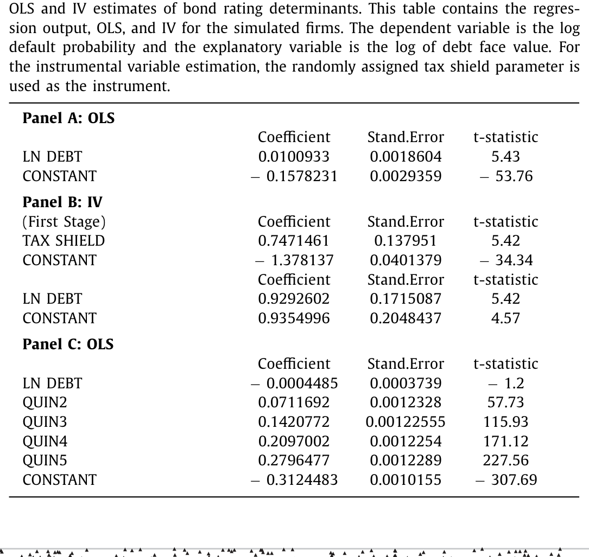
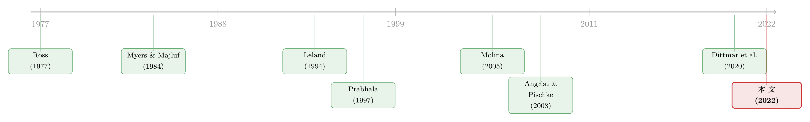

工具变量「洗掉」的，恰恰是 CFO 最需要的那部分因果
本文读的是 Hennessy & Chemla (2022, Journal of Financial Economics)：他们用三个「寓言经济（parable economy）」把计量经济学家、掌握私有信息的 CFO 和外部投资者一起塞进同一个模型，得出一个让人不太舒服的结论——工具变量 (instrumental variables, IV)、模糊断点 (fuzzy regression discontinuity, fuzzy RD)、自然实验这些「可信」的识别技术，在为 CFO 这类决策者提供决策依据时，往往会把答案算反。原因是：制造外生随机化的同时，也把「相机抉择本身携带的信号」一并洗掉了。
1 一个让人不安的开场
先讲一个量级上很扎眼的事实。Molina (2005) 研究杠杆对债券评级的影响，他怀疑普通最小二乘 (ordinary least squares, OLS) 因为杠杆的内生性而低估了效应，于是用公司税率作为杠杆的工具变量。结果：IV 估计出的效应是不做内生性处理时的三倍还多。
按照过去二十年公司金融实证的「行规」，故事到这里就该收尾了——OLS 有内生性偏误，IV 给出了「干净」的因果效应，发表。Bowen, Frésard & Taillard (2017) 数过，顶级三大金融期刊里用「识别技术」的实证公司金融论文，占比从 1980 年代末的近乎 0% 一路涨到 2012 年的 50% 以上。识别，识别，还是识别。
但本文的两位作者偏要追问一句：这个被 IV「修正」出来的、漂亮的因果系数，对一个真正要做决策的 CFO 来说，到底有没有用？
这不是又一篇「你的工具变量不够外生」的方法论批评。本文里的工具变量是作者亲手造的、完美满足排他性约束（exclusion restriction）的理想工具。问题恰恰出在 IV 一切都对的时候——它依然会把 CFO 引向错误的决策。
2 两种因果效应：本文的「一个核心」
要把这件事讲透，先得接受作者提出的一组区分。这是全文的枢纽，请记住它。
- 偏因果效应（partial causal effect）：保持各方的信念（beliefs）不变，仅由驱动变量（forcing variable）的外生变动引起的结果变化。作者证明，这正是标准 IV 所恢复的东西。
- 总因果效应（total causal effect）：当决策者相机抉择地改变驱动变量时，允许各方信念随之内生调整所带来的结果变化。
这两者的差，就是信号效应（signaling effect）。
接着，一个自然的问题是：CFO 到底需要哪一个？作者的回答干脆——在掌握私有信息的决策环境里，总因果效应才是 CFO 最优决策的充分统计量（sufficient statistic）。而 IV 给的是偏因果效应。于是矛盾出现了：你越是费尽心机找一个完美的工具，你恢复出的那个数，就越偏离 CFO 真正该看的那个数。
为什么？因为工具变量为了实现「准随机化」，是以一种所有人都看得见的方式去搅动驱动变量的。当债务的变动来自一个外部投资者也能观察到的工具（税率），这个变动就不携带任何关于公司私有信息的信号。可现实里，CFO 不是被工具「逼」着加杠杆的——她是主动加的。而一旦是主动的相机抉择，市场就会去解读：「他为什么要这么做？」信号效应就成了 CFO 必须纳入考量的因果链的一环。
一句话记住本文：IV 衡量的是「被迫/误操作之后会发生什么」，CFO 想知道的却是「我主动这么做会发生什么」。 前者把信号洗掉了，后者离不开信号。
3 把计量经济学家写进模型：IV 那个寓言经济
本文不写学术八股，而是造「寓言经济」——用最小的结构去逼近被实证利用的真实数据生成过程，连结构估计的数值分析都不需要，作者说在 Excel 里摇随机数就能跑出来。下面这个经济，是为复刻 Molina (2005) 而造的。
设定。 两期 \(t\in\{0,1\}\)，所有人风险中性、不贴现。\(t=0\) 时一大批私募股权投资人把手里公司打包出售。公司 \(j\) 在 \(t=1\) 的税后现金流 \(\tilde c\) 服从 \([0,\Theta_j]\) 上的均匀分布，\(\Theta_j\) 是该公司的质量（quality）。打包成债是有税收优惠的（Gourio, 2013 式），政府给公司 \(j\) 一笔正比于税盾参数 \(\tau_j\) 的返还；若到期现金流不足以偿付面值 \(B\)，原赞助人承担声誉成本 \(LB\)。
关键的信息结构：债务 \(b_j\equiv\ln B_j\) 和评级 \(\lambda_j\) 是公开的，但公司质量 \(\theta_j\equiv\ln\Theta_j\) 谁也看不见——包括计量经济学家、评级机构和投资者。
计量经济学家担心杠杆内生（私募赞助人会根据私有的 \(\theta_j\) 去选债务），于是她写下一个她以为对的评级方程。由于现金流均匀分布，违约概率 \(\Pr(\tilde c\le B_j)=B_j/\Theta_j\)，取对数：
$$\ln \Pr\!\left(\tilde{c} \le B_j\right) = \ln\!\left[\frac{1}{\Theta_j}\int_0^{B_j} dc\right] = \underbrace{\beta_1}_{=1}\, b_j + \underbrace{\beta_2}_{=-1}\,\theta_j .$$
也就是 \(\lambda_j = b_j - \theta_j\)：债越多评级越差（\(\beta_1=1\)），质量越高评级越好（\(\beta_2=-1\)）。\(\theta_j\) 看不见，正是内生性的来源。
为了找工具，她又写下一个私募赞助人的资本结构优化问题：
$$B_j^* \in \arg\max_B \; \frac{\Theta_j}{2} + \tau_j B - LB \times \underbrace{\Pr(\tilde{c}\le B_j)}_{=\,B/\Theta_j}.$$
一阶条件解出：
$$\tau_j = \frac{2LB_j^*}{\Theta_j} \;\Rightarrow\; B_j^* = \frac{\tau_j \Theta_j}{2L} \;\Rightarrow\; b_j^* = \theta_j + \ln(\tau_j) - \ln(2L).$$
到这里，\(\tau_j\) 是一个教科书级别的理想工具：税盾越高、债越多（相关性满足）；税盾只通过改变 \(b_j^*\) 来影响违约风险（排他性满足）；而且税盾是随机分配的。无可挑剔。
模拟。 作者按 Molina (2005) 取样本量 2678 个模拟公司，\(\tau_j\) 是 $[0,1/2]$ 上的 i.i.d. 均匀抽样，声誉损失 \(L=1/2\)，质量参数均匀分布在 $[0,1]$。跑出来的结果（表 1）正是 Molina 故事的完美复刻：
- OLS（Panel A）：把 \(\lambda_j\) 直接对 \(b_j\) 回归，斜率
0.0101（t =5.43），小到可以忽略——天真地看，CFO 加杠杆似乎对评级毫无影响。 - IV（Panel B）：第一阶段税盾系数
0.747（t =5.42）很强；第二阶段杠杆系数0.929（t =5.42），逼近理论值 1。计量经济学家于是「确信」：加杠杆会让评级急剧恶化，OLS 严重低估了，IV 才对。

Table 1
故事眼看又要在 IV 的胜利中收尾。但真正关键的一步在于下面这个问题：在这个经济里，如果一个 CFO 真的去多发债，他的评级究竟会怎么变？
4 反转：被 IV 洗掉的，正是因果链本身
作者指出，计量经济学家在写下私募赞助人的决策问题（上面那个 \(\arg\max\)）时，偷偷违反了理性预期——她隐含地假设公司外部的投资者、评级机构能看见那个本该看不见的 \(\theta_j\)。可正是「\(\theta_j\) 看不见」这件事，最早触发了她对遗漏变量偏误的担忧、催生了她的 IV 策略。她自己的工具变量动机，和她写下的结构方程，自相矛盾。
正确的设定是：评级机构面对和计量经济学家同样的潜变量问题。它看不见 \(\theta_j\)，只能像 Ross (1977) 的信号模型那样，用市场对类型的推断 \(\hat\Theta_\tau\) 去估违约概率。于是均衡里观察到的评级是：
$$\lambda_j = b_j - \ln\hat\Theta_\tau\!\big(\tau(B_j)\big) = -\ln\!\left(\frac{\sqrt{\tau_j^2 + 4L} - \tau_j}{2}\right).$$
请盯住这个式子的结局：\(b_j\) 被消掉了。也就是说，在给定可观测的税盾 \(\tau_j\) 之后，公司的评级根本不随它选择的债务水平变化。 这正是 Panel C 的 OLS 输出在讲的事——把 \(\lambda_j\) 对 \(b_j\) 和税盾五分位虚拟变量一起回归，\(b_j\) 的系数是 −0.0004485（t = −1.2，不显著），而 \(R^2\) 高达 0.96，近乎完美拟合。在每个税盾分位内部，评级对债务水平纹丝不动。
直觉是什么？评级机构和投资者面对的潜变量问题，和计量经济学家是同一个。因此 IV 想要消掉的那个内生性，本身就是 CFO 所面对的因果链的一部分。市场不会傻看着你加杠杆——它会从你的相机抉择里反推你的类型。CFO 心里真正该装的那句话是：「如果我改变公司的杠杆率，它的债券评级其实不会变。」给他这句话的，不是被奉为圭臬的 IV，而是「有偏的」OLS。
现在可以把 OLS 和 IV 的关系一锤定音了。真实关系是 \(\lambda=b-\hat\theta\)，IV 恢复的是 \(\partial\lambda/\partial b=1\)，而 OLS 把 \(\lambda\) 对 \(b\) 回归得到：
这个等式把全文压缩成了一行：OLS = IV − 信号效应。IV 给你 1，信号项 \(\beta^{OLS}_{\hat\theta b}\) 也接近 1，两者相减，OLS 接近 0。被 IV「修正」掉的那个内生性，不是污染，而是 CFO 决策时必须扣除的、来自市场重新定价的真实因果通道。换句话说，OLS 的「偏误」在这里就是答案。
5 不止 IV：模糊断点与财政冲击的同一个病
作者没有止步于一个例子。他们又造了两个寓言经济，把同一把刀架在不同的识别技术上。
模糊断点（重访 Dittmar, Duchin & Zhang, 2020）。 DDZ 用模糊 RD 给增发（seasoned equity offering, SEO）提供了「迄今最干净的因果估计之一」。作者复刻其设计：期初同质的公司在中期遭遇一个落在 $[0,1]$ 上的可观测冲击，冲击高于（低于）$1/2$ 的公司以较高（较低）概率获得董事会放行 SEO 流程。在这个经济里，模糊 RD 确实显示增发对股价有正的因果效应，股价在阈值处向上跳。但这个证据对真正决定发多少股的 CFO 用处有限——CFO 在尽职调查中获得私有信息后，仍然面对一条向下倾斜的股价函数，而条件事件研究（conditional event study）能揭示这一点。模糊 RD 的证据对董事会（在私有信息到达之前做放行决策）有用，对CFO（在之后做发行决策）则不然。证据有没有用，取决于谁在什么信息节点上做什么决策。
财政冲击（重访 Romer & Romer, 2010）。 把 CFO 换成政府，结论照样成立：对外生冲击的反应能识别出「有正偏因果效应」的潜在刺激政策，但相机抉择的刺激的真实效果，要由政府真的动手之后可直接观测的总因果效应来衡量。
三个例子，一个核心：评估和使用实证证据，取决于决策者、投资者、计量经济学家三方信息集的细颗粒假设——这远比排他性约束本身更要命，却长期被忽视。
6 文献脉络
这条线要从信号说起。Ross (1977) 把资本结构当作向市场传递私有信息的信号，Leland (1994) 给出了内生违约的资本结构定价框架，Myers & Majluf (1984) 则点明了 CFO 相对外部投资者的信息优势——本文整个「CFO 掌握私有信息」的前提，就立在这三块基石上。
接着，实证公司金融走上了「识别技术」这条路。Molina (2005) 用税率作工具估杠杆对评级的影响，是本文头号靶子；Dittmar, Duchin & Zhang (2020) 用模糊 RD 估增发效应，是第二个；Romer & Romer (2010) 用立法史隔离财政冲击，是第三个。Bowen, Frésard & Taillard (2017) 则用数据记录了这股「识别浪潮」的崛起。

然后，方法论的另一支早有伏笔。Prabhala (1997) 用理性预期范式比较标准事件研究与条件事件研究，本文自承「与之神似」，只是把比较对象换成了 IV 对 OLS/事件研究。Angrist & Pischke (2008) 那句「常用估计量几乎总有一个不太依赖模型的简单解释」，恰是本文要正面顶撞的命题。更晚近，Fudenberg & Levine (2019) 证明贝叶斯学习会让 RD 估计偏离真实偏因果效应——但他们不质疑偏因果效应对决策的价值，本文则正是在质疑这一点。
于是本文的位置清楚了：它不在「找更好的工具」这条主路上，而是横插一刀，问「这条主路通向的那个数，对决策者到底有没有用」。这与近年实证里对「直接问当事人」的兴趣相通——关于让 CFO 自己开口的思路，可参见《从马嘴里掏答案：直接问 4641 家公司》；而关于事件研究的因果推断本身有多脆弱，可参见《事件研究里的「假阳性」》。
7 评论与延伸（Q&A + 研究方向）
(a) 几个可能的疑问
Q：这是不是又一篇「你的工具不够外生」的老调？
不是，而且恰恰相反。作者亲手把工具造得完美——相关性、排他性、随机分配全满足。批评不针对工具的有效性，而针对工具变量这个目标：当目标是给掌握私有信息的决策者提供决策依据时，即便工具完美，IV 恢复的偏因果效应也不是决策者要的总因果效应。
Q：信号效应和我们熟悉的选择偏误（selection bias）是一回事吗？
相关但不同。作者用 Angrist-Pischke 的「住院」例子说明：病人不能靠「不去住院」来改善健康，这里观测证据确实有选择偏误。但所有公司（包括差公司）都能靠模仿强公司的政策来抬升股价——这是信号。此时观测证据反而能给出动作因果含义的无偏估计。差别在于决策者能否通过模仿去「制造」那个结果。
Q：那是不是说 IV 一无是处、回去用 OLS 就行？
没那么绝对。作者的主张是「视目标而定」：若目标是预测被迫或误操作之后的结果，IV 合适；若目标是为相机抉择提供依据，则 OLS、事件研究、条件事件研究可能就够了，甚至更好。在模糊 RD 那个例子里，RD 证据对董事会的事前放行决策是有用的，只是对CFO的事后发行决策没用。
Q：模型里 OLS 的 \(R^2\) 高到 0.96，是不是太巧了？
是作者刻意构造的极端情形，目的是把机制放到最清楚。\(R^2=0.96\) 说明在每个税盾分位内，评级几乎完全由可观测的 \(\tau\) 决定、与债务水平 \(b\) 无关——这正是「条件于可观测信息后，评级对相机抉择的杠杆不敏感」的数值化。现实里不会这么干净，但方向性的洞见不依赖这个具体数字。
Q：作者到底给实证研究者的可操作建议是什么？
一句话：先做寓言经济估计，再做现实世界的 IV 估计。 即在选估计量、解释估计值之前，先写一个能粗略复刻被利用的数据生成过程（含三方信息集）的极简模型，哪怕只是在 Excel 里摇随机数。模型会告诉你，你手里的那个系数到底在回答哪个问题。
Q：这套批评在真实文献里覆盖面有多广？
作者重读了 BFT 样本里
253篇用 IV/RD/实验的顶刊论文，筛出185篇（73%）真正倚重这些识别策略的；再逐篇判定其批评是否适用——前提是存在一条理论上合理的信号通道、且识别策略恰好把信号那段因果链剔除了。结论是适用于130篇，占最终样本的70%。不是边角案例。
(b) 几个可能的研究问题与提案
1. 公司债发行的「信号 vs. 工具」分解。
【经济故事】本文的靶子是评级，但公司债一级市场定价里同样充满信号：主动增发债券携带的私有信息，会被投资者重新定价进利差。能否在真实数据里把利差对杠杆的反应，分解成「偏因果效应」与「信号效应」两段？
【可行性】中。需 Mergent FISD 发行数据 + TRACE 二级成交，识别上可借企业税率/州税变动作工具对照 OLS，按本文逻辑比较两者差额。难点在于真实世界没有「理想工具」，分解会含噪声——但这恰恰是本文「先建寓言经济再估计」建议的用武之地。
2. 外资持有人作为「信息节点」的事件研究。
【经济故事】当一家公司被纳入某指数、吸引大量外资被动持有，其后续融资动作的信号含义会不会改变？外资与本地投资者信息集不同，意味着同一个相机抉择对不同持有人结构的公司，总因果效应可能不同。
【可行性】中。需指数纳入事件 + 持有人结构（FactSet/13F）。识别可用指数重构断点，但要小心本文的警告：断点证据回答的是「事前决策者」的问题，未必是发行公司 CFO 的问题。
3. 流动性冲击下的「被迫 vs. 主动」抛售。 【经济故事】本文区分「被迫/误操作」与「相机抉择」恰好对应债市里的被迫抛售（fire sale）与主动调仓。同样是卖出，前者不携带信号、后者携带——价格冲击的因果解读应当不同。 【可行性】高。共同基金赎回（Coval-Stafford 式流量工具）天然提供「被迫」变异，可与基金主动减持对照，检验二者对债券利差的冲击是否如本文预测地系统不同。数据与识别都成熟。
4. 把「寓言经济估计」做成标准稳健性栏。 【经济故事】本文方法论主张能否制度化？即要求每篇 IV/RD 论文附一个极简模拟经济，展示在三方信息集的合理假设下，所估系数对应的是偏还是总因果效应。 【可行性】高（作为方法贡献）。无需新数据，门槛是说服力而非技术——本文已证明 Excel 级随机数就够，关键是建立一套可复制的「最小结构」模板。
8 参考文献与我的判断
我的判断。 本文最大的贡献，是把一个一直被当作「技术问题」的东西，重新框定成「目的问题」：识别技术的价值，不取决于工具有多外生，而取决于谁、在什么信息节点、用这个证据做什么决策。把计量经济学家显式地写进模型、与决策者和投资者共享一个信息结构，这个动作本身就极有启发性——它逼你说清自己到底在估计哪个对象。OLS = IV − 信号 这一行，会长久地留在我脑子里。
但要诚实地说担忧。其一，这是寓言经济，不是对真实数据的检验；\(R^2=0.96\) 这种近乎完美的拟合是设定出来的，机制虽真，现实里信号效应与偏因果效应的相对大小是个实证问题，本文没回答。其二，「批评适用于 70% 的论文」这个数字依赖作者逐篇的主观判定（是否存在「理论上合理的信号通道」），可复制性存疑。其三，本文给出的是「IV 可能误导」的存在性证明，却没给出一个可操作的判据告诉研究者：面对手里这篇具体的论文，信号通道到底有多重要、值不值得放弃 IV。
后续我最想看到的，是有人把这套「先建寓言经济、再比对 OLS/IV」的流程，真刀真枪地用到一个公司债或信用市场的实证问题上，给出信号效应的量级估计——而不止停留在「原则上它可能很大」。本文负责把问题问对，剩下的，是把它量出来。
参考文献
Angrist, J.D. & Pischke, J.-S. (2008). Mostly Harmless Econometrics: An Empiricist's Companion. Princeton University Press.
Bowen, D.E., Frésard, L. & Taillard, J.P. (2017). What's your identification strategy? Innovation in corporate finance research. Management Science 63(8), 2529–2548.
Dittmar, A., Duchin, R. & Zhang, S. (2020). The timing and consequences of seasoned equity offerings: a regression discontinuity approach. Journal of Financial Economics 138(1), 254–276.
Fudenberg, D. & Levine, D. (2019). Learning in games and the interpretation of natural experiments. American Economic Journal: Microeconomics, forthcoming.
Gourio, F. (2013). Credit risk and disaster risk. American Economic Journal: Macroeconomics 5(3), 1–34.
Hennessy, C.A. & Chemla, G. (2022). Signaling, instrumentation, and CFO decision-making. Journal of Financial Economics 144(3), 849–863.
Leland, H.E. (1994). Corporate debt value, bond covenants, and optimal capital structure. Journal of Finance 49(4), 1213–1252.
Molina, C.A. (2005). Are firms underleveraged? An examination of the effect of leverage on default probabilities. Journal of Finance 60(3), 1427–1459.
Myers, S.C. & Majluf, N.S. (1984). Corporate financing and investment decisions when firms have information that investors do not have. Journal of Financial Economics 13(2), 187–221.
Prabhala, N.R. (1997). Conditional methods in event studies and an equilibrium justification for standard event-study procedures. Review of Financial Studies 10(1), 1–38.
Romer, C.D. & Romer, D.H. (2010). The macroeconomic effects of tax changes: estimates based on a new measure of fiscal shocks. American Economic Review 100(3), 763–801.
Ross, S.A. (1977). The determination of financial structure: the incentive-signalling approach. Bell Journal of Economics 8(1), 23–40.